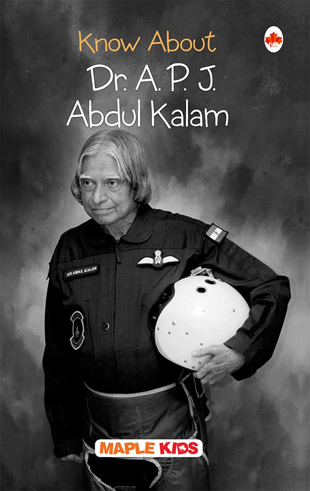

APJ ABDUL KALAM
MISSILE MAN OF INDIA

His full name was Avul Pakir Jainulabdeen Abdul Kalam, born in Rameswaram of Madras Presidency on 15th October 1931 and died on July 27, 2015, Shillong. He was an Indian Scientist and also a politician leader, who later became the 11th President of India.
He played an important role in the development of India’s missile and nuclear weapons program.
Dr. A P J Abdul Kalam's Biography
Kalam as a ScientistKalam joined as a scientist in the aeronautical development establishment of DRDO in
1960, after graduation. His career started with him designing a small hovercraft. However, he was not convinced by his choice of a job at the DRDO. Kalam was transferred to ISRO in 1969, where he was the project director of India's first satellite vehicle launch.
The satellite vehicle deployed the Rohini satellite successfully in near-Earth orbit in July 1980. Kalam received the Government's LV and Slv projects between the 1970s-90s. He directed two projects like Project Devil and Project Valiant, which aimed at developing ballistic missiles from the successful SLV program's technology Kalam somehow convinced Indira Gandhi and sought secret funds for these aerospace projects.
His research and immense knowledge brought him and the nation great laurels in the 1980s.
Kalam then went on to become the scientific advisor of the defence minister in 1992 and served at the same post for five years before getting promoted to
the post of principal scientific advisor to the government. His immense role in the country's 1998 nuclear weapons tests solidified India as a nuclear power. Kamal had now become a national hero, to be remembered for ages to come.However, the tests he conducted caused a huge uproar in the international community.
Kamal put forward a nationwide plan called Technology Vision 2020, which according to him, was a fantastic way for transforming the stature of India in 20 years, taking it from a developing to a developed nation.
The plan envisioned the progress of the nation by adopting advanced technology, expanding healthcare facilities, and emphasizing the education of the masses.
Abdul Kalam was a person of a golden heart who has received ample awards and achieved many things during his life journey. In 1981 Abdul Kalam received the prestigious Padma Bhushan award. In 1990 he received the Padma Bhushan award. The renowned personality, because of his tremendous effort towards the nation, received the Bharat Ratna in 1997. In the same year, he was awarded the Indira Gandhi Award for National Integration. The government of India awarded Kalam with the Veer Savarkar award in 1998. Because of his contribution to arts, science, and technology, he received the SASTRA Ramanujan prize in 2000.
Finally, in the year 2013, the eminent personality was bestowed with the Von Braun Award by the National Space Society.
This complex persona was a notable researcher displaying huge and unending science and mechanical innovative work. It was he who made our country atomic in its most genuine sense. It was in the year 1974, under the oversight of Dr. Kalam, that India went through its most memorable atomic test. Next came the Pokhran - II in the year 1988.
It was through these atomic tests Dr. Kalam showed the world India's situation and power in atomic innovation.
His works granted him three great honours from the Govt. of India specifically Padma Bhushan, Padma Vibhushan, and the Bharat Ratna. In the year 1997, Kalam was likewise granted the Indira Gandhi Award for National Integration. He was granted the Veer Savarkar Award in the year 1980 and the Ramanujan Award in the year 2000.
From 40 colleges all over the world, Kalam got privileged doctorates.